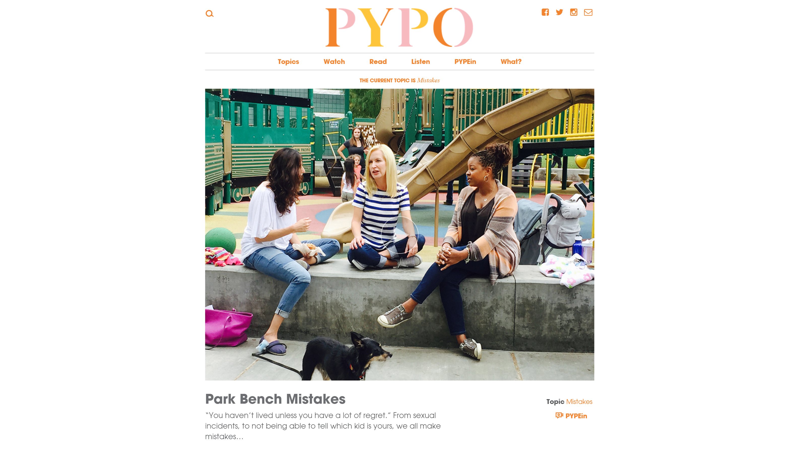
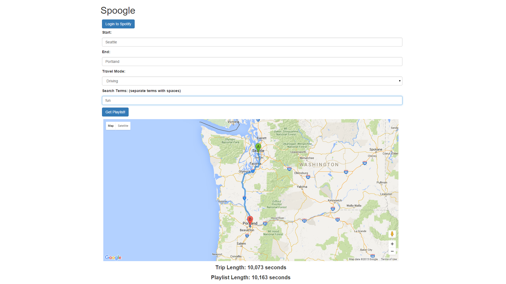
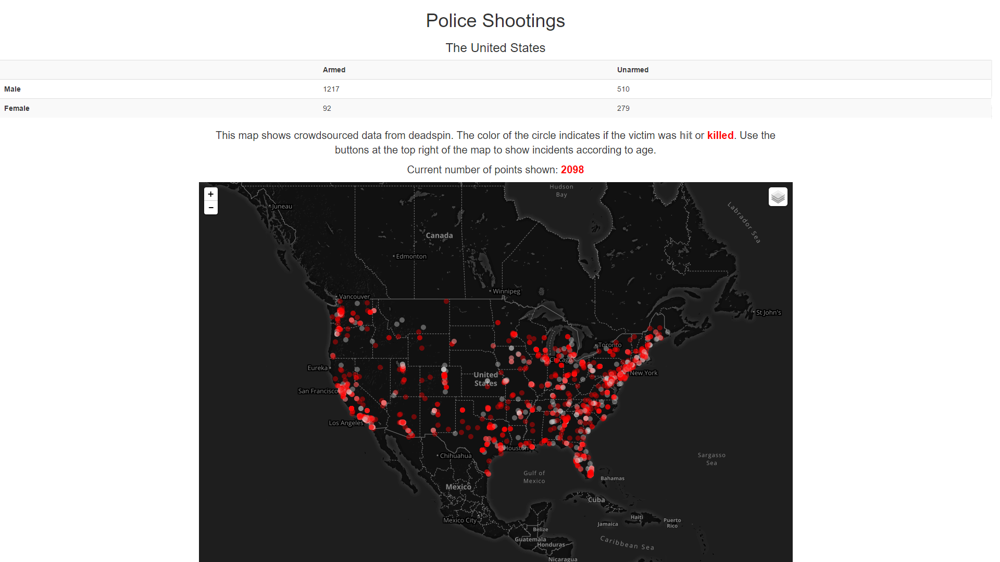

Portfolio
Location Tagger (Augmented Reality)

Location Tagger is an application that allows users to create virtual points in a geographical location that others can view and interact with. You can think of it like writing with chalk on the ground to let people know there is a party happening on
Saturday, only now all you need is a smart phone. Tags are available from both a map and an augmented reality view. I was solely responsible for the AR in the application.
PYPO

PYPO is a social, news, blog site made for women over 35. It brings together women to openly discuss, and sometimes make fun of, societal pressures they feel. There are no topics that are off limits and the goal is to make everyone feel included. I worked
on this site during my time at Green-Ideas. It was a very rewarding experience for me, as it was my first major project outside of school.
Spoogle

Spoogle is a web application designed to make playlists for roadtrips. It uses the Spotify API and the Google Maps API. Basically all you have to do is tell it where you're starting and where you're going and give it some search terms and it will make
a playlist for you. You can add it to your spotify account easily by signing in.
Police Shootings

Police Shootings was an assignment done for INFO 343: Front End Web Development. The goal was to visually represent a crowd sourced collection of police shootings visually across a map. The map was created using leafly. There are filters built into the
map to allow better viewing of the data.